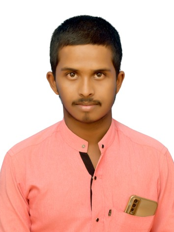

Abjal Zhare
Fresher

Education
-
Sri M S V Vidya Peeta School, Athani, Karnataka-591304
Percentage: 72.5% -
Banajawada Residential P U College, Athani, Karnataka-591304
2020 – 2022
Percentage: 72% -
BE. Computer Science and Engineering
Maratha Mandal Engineering College, Belagavi, Karnataka-591113
Personal Details
- Languages Known: Kannada, Hindi, English
- Date of Birth: 24/10/2003
- Address: Budhawara Patha, Athani, Karnataka-591304
Career Objective
To secure a job in the IT Industry where I can utilize my knowledge for the organization’s growth.
Project
Generation of electricity using waste
Face Recognition Attendance System
Skills
- Coding
- Programming Languages: Python, C, C++, DSA
- Certificate from SLES Computer Saksharata Abhiyan under Diploma in Computer Teacher Training Course of One Year
- Strong Communication Skills
- Teamwork
- Problem Solving